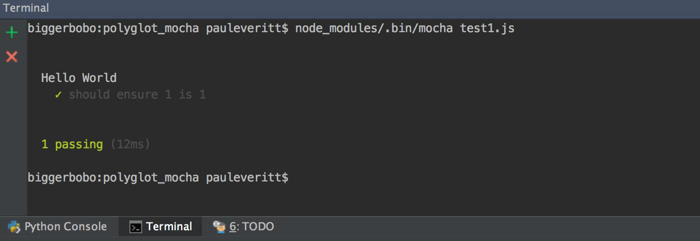
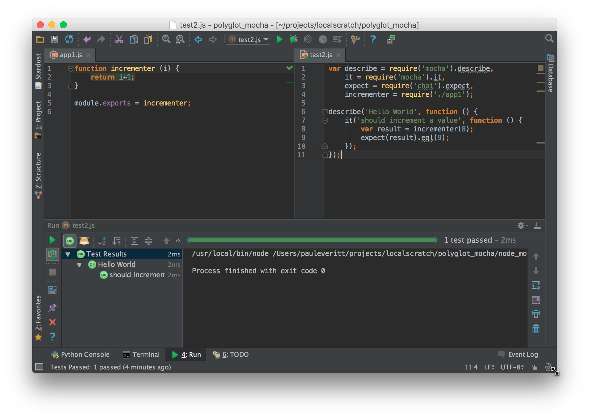

Testing with Jest¶
Python has a strong history with unit testing. In JavaScript? Not so much, as driving a browser is a pain. But with the emergence of NodeJS, unit testing with test runners like Mocha, it’s now more feasible to do TDD.
This article introduces a small amount of Mocha, apart from any particular application. Like our other Polyglot articles, it’s written from a Python perspective.
Overview¶
- Explain the virtue of browserless-first frontend development
- Introduce JavaScript testing in the context of Python testing
- Install Mocha and Chai plus a simple test
- Show PyCharm as a UI for Frontend TDD
Test Runners, Assertions, Mocks¶
The Python standard library has long had the unittest module
as the de-facto unit testing option for test suites, fixtures,
and assertions. While recent alternatives such as pytest
have gained traction, most Python developers are familiar with
the built-in test support.
JavaScript isn’t anywhere close to that. Over the years different browser-based solutions appeared, but not only did none gain a majority, the idea of testing itself never took hold. Most JavaScript developers have never written a test. It’s just not in the culture.
Recently that has begun to change, particularly with outside-the-browser environments such as NodeJS. Mocha is a popular test runner for NodeJS. People often extend Mocha to use Chai for assertions and Sinon.JS for mocking.
Usually with this approach, you remove the browser and run in NodeJS. Let’s talk about that for a moment.
Browserless¶
This is a funky idea. It’s very important, though, so let’s go through it.
Developing via a browser is way, WAY different than Python development. Type, save, change window, reload browser, change back. And heaven help you if you need to debug.
Wouldn’t it be great if you could code the core logic without a browser, and only check the browser when you needed to? Even better, wouldn’t it be great if we could get into a zen-like TDD mode of web application development?
In our previous step we saw modular development, without a browser. This is a very Pythonic way of JavaScript development. Writing reusuable code as modules is one Pythonic technique. But writing code that is productively testable during development is another part of Pythonic development.
Mocha and Chai Installation¶
Let’s start with a new directory containing the package.json
and .eslintrc from the previous step. Remember that this directory
is like a virtual environment in Python, albeit like one that has
with-site-packages set to true. That is, NodeJS looks in your local
node_modules first and then in the global environment for a package.
Let’s install Mocha and Chai locally and save them as development
dependencies in our package.json:
$ npm install --save-dev mocha chai
After doing this command, we now have a node_modules directory
with 21 packages in it, for the Mocha and Chai dependencies.
Our package.json should now contain these development dependencies:
"devDependencies": {
"chai": "^3.4.1",
"mocha": "^2.3.4"
}
Hello Test¶
Now that we have a test runner (Mocha) and an assertion library (Chai),
let’s write and run a test. Save the following as as test1.js:
var describe = require('mocha').describe,
it = require('mocha').it,
expect = require('chai').expect;
describe('Hello World', function () {
it('should ensure 1 is 1', function () {
expect(1).eql(1);
});
});
Tests need “assertions”, which are statements about what should be a
result. The chai package provides an expect function for our
assertions. We use a Node require to import these functions. In
Python, this would be:
from mocha import describe, it
from chai import expect
We then have a Hello World test suite with 1 test and one assertion.
In JS testing, functions are the way of nesting scopes. The Mocha test
runner puts this to use in test running.
The expect function wraps a JavaScript expression as an assertion
and returns an object with methods used for testing. We use .eql
to assert equality.
We can run this test from the command-line:
$ node_modules/.bin/mocha test1.js
We should get the following output:
That’s command line…well, it’s fairly barbaric. As discussed in
Automation with npm run Scripts, we can make it easy for ourselves and others to
discover and run important, frequent commands by adding package.json
entries under scripts.
Let’s add an entry in scripts to run our Mocha test:
"scripts": {
"test": "mocha test1.js"
},
Remember that we didn’t have to put node_modules/.bin in front of
mocha, as npm knows that npm run scripts probably should
have that in the path.
This is now easier:
$ npm run test
In fact, test is one of the pre-defined script names that gets a
shortcut, so you can omit the run part:
$ npm test
But hey, this is PyCharm. Can’t we do better than a console?
Mocha Integration for PyCharm¶
PyCharm has run configurations with presets for a bunch of things you might want to run. We saw in NodeJS for Python and PyCharm Developers that PyCharm has run configuration templates for NodeJS. We also know that PyCharm supports run configurations for a number of Python test runners.
Any chance PyCharm can put a nice UI on Mocha tests? Yes indeed:
Right-click on the tab for test1.js and click Run, and PyCharm
will run your tests. Along the way, it will create a Mocha-based
Run Configuration. We can see that run configuration via
Edit Configurations:
Now when we run our tests, instead of text output in a console, we get a managed UI for test running, with the same UI used for running Python tests.
Testing Application Code¶
We’re not really testing anything, though. Let’s write a function for incrementing a value, then test that it works.
Note
We are using NodeJS-style (aka CommonJS) module syntax. Other examples use ES6 (aka ES2015) modules transpiled via Babel. We don’t want that transpiler complexity polluting this example, but we’ll get to that in TODO Link to Babel article.
First we create our module, app1.js:
1 2 3 4 5 | function incrementer (i) {
return i+1;
}
module.exports = incrementer;
|
This module exports our incrementer function as its default export,
which we then import into our test code:
var describe = require('mocha').describe,
it = require('mocha').it,
expect = require('chai').expect,
incrementer = require('./app1');
describe('Hello World', function () {
it('should increment a value', function () {
var result = incrementer(8);
expect(result).eql(9);
});
});
Line 2 imports the code we want to test. The two lines in the test
execute this code and test the result. Let’s right-click on the
test2.js tab and run this test file. We should see this output:
TDD with PyCharm¶
With modules, a Mocha run configuration, and PyCharm’s testing UI, we now have a good basis for Pythonic testing in JavaScript, without needing a browser. How can we get into test-driven development (TDD) mode? Let’s get PyCharm to help us with automatically-executing tests and test debugging.
First, let’s get into the flow by having our test re-run on each change to our source. In the Mocha tool window, click the button below the green “Rerun” button, the “Toggle auto-test” button. Then click the green “Rerun” button. With this in place, PyCharm will re-run tests when your source or test code changes:
As a note, PyCharm doesn’t require that you actually save the file before it detects the change.
PyCharm has many options for controlling the JavaScript testing experience. In the video above, we saw changing the delay from 3 seconds to two seconds.
Here’s a great way to be productive: split the screen, with your application code on the left and your tests on the right:
Just like for its Python testing, PyCharm has a stupendous number of options organizing the display of the test window:
- Hide/show passing tests
- Sort alphabetically on test name
- Show (and sort based on) duration of test run
- Automatically open at the line of an error
PyCharm also makes debugging easy during TDD. You can set a breakpoint in your JavaScript code or your tests, step through your code, and set watches:
Wrapup¶
Hopefully this article showed: Frontend TDD and PyCharm are for real.
We only scratched the surface of what PyCharm can add for test-driven development and JavaScript. There’s much more: for example, you can install code coverage packages and PyCharm will give you a button and a visual display of the coverage information.
If you are a TDD-oriented Python developer, you likely know how PyCharm can boost Python testing productivity. With JavaScript, you might not even have considered TDD. Once you think headless with NodeJS and Mocha, though, you can let PyCharm orchestrate your JavaScript testing.